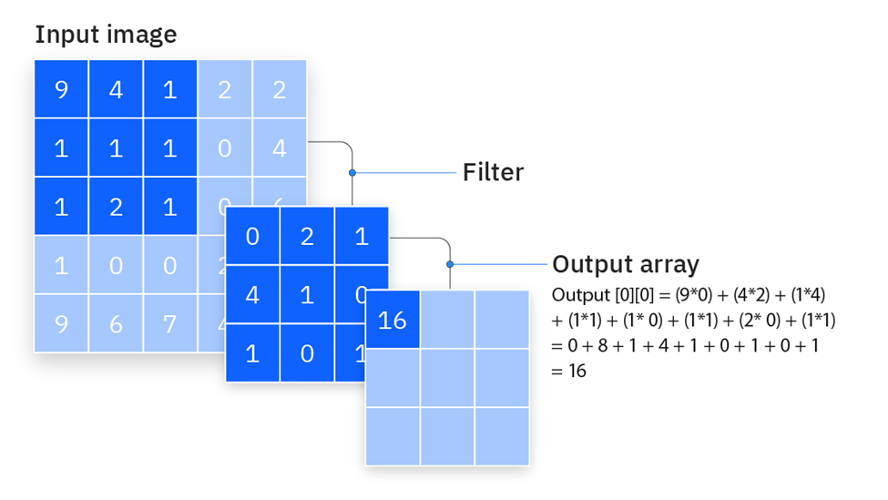

Programação Paralela em GPU com CUDA Stencil, Tiling e Agendamento de Threads¶
O que é um Stencil Operation?¶
Um stencil é um padrão computacional onde o valor de uma célula de saída depende de uma vizinhança local de células de entrada.
- Fórmula geral:
Quando estamos trabalhando em GPU é preciso pensar em blocos e vizinhos compartilhados.
Aplicando a lógica de Stencil a uma operação de convolução¶
 Convolução - Fonte: https://www.ibm.com/think/topics/convolutional-neural-networks
Exemplo: Filtro 3×3¶
Problema: cada thread acessa os mesmos elementos da memória global.
Solução: usar shared memory com tiling.
__global__ void conv2D(float *input, // ponteiro para a imagem de entrada
float *output, // ponteiro para a imagem de saída
float *mask, // máscara 3x3 usada na convolução
int width, // largura da imagem
int height) { // altura da imagem
int i = blockIdx.y * blockDim.y + threadIdx.y; // linha da imagem
int j = blockIdx.x * blockDim.x + threadIdx.x; // coluna da imagem
float acc = 0.0f; // acumulador
// Varre a vizinhança 3x3 ao redor do pixel central (i, j)
for (int y = -1; y <= 1; y++) {
for (int x = -1; x <= 1; x++) {
// Calcula a posição do vizinho dentro da imagem de entrada
int r = i + y;
int c = j + x;
// Verifica se a posição (r, c) está dentro dos limites da imagem
bool dentroDaImagem = (r >= 0 && r < height && c >= 0 && c < width);
if (dentroDaImagem) {
int pixelIndex = r * width + c;
int maskRow = y + 1;
int maskCol = x + 1;
int maskIndex = maskRow * 3 + maskCol;
float pixelValue = input[pixelIndex];
float maskValue = mask[maskIndex];
acc += pixelValue * maskValue;
}
}
}
// Escreve o resultado final no pixel correspondente da saída.
output[i * width + j] = acc;
}
Tiling¶
Relembrando:¶
- Dividimos a matriz em tiles (blocos) que cabem na memória compartilhada .
- Cada bloco carrega seu pedaço + uma margem extra para carregar dados vizinhos.
- Cada thread block cuida de um tile.
- Halo é o pedaço adicional carregado com os dados vizinhos, para evitar dependência entre blocos.
__syncthreads()barreira para garantir que todas as threads carregaram antes de processar.
Mesmo código, agora com shared memory e bordas¶
#define TILE_SIZE 16 // tamanho da área de processamento do bloco
#define MASK_RADIUS 1 // raio da máscara 3x3
#define MASK_SIZE 3
__global__ void conv2D_tiled(float *input, // imagem de entrada
float *output, // imagem de saída
float *mask, // máscara 3x3
int width, // largura da imagem
int height) { // altura da imagem
int tx = threadIdx.x; // coluna da thread dentro do bloco
int ty = threadIdx.y; // linha da thread dentro do bloco
// posição global (i,j) da thread na imagem
int j = blockIdx.x * TILE_SIZE + tx;
int i = blockIdx.y * TILE_SIZE + ty;
// Memória compartilhada do bloco
__shared__ float tile[TILE_SIZE + 2 * MASK_RADIUS][TILE_SIZE + 2 * MASK_RADIUS];
// Calcula a posição global do pixel que esta thread deve carregar
int inputRow = i - MASK_RADIUS;
int inputCol = j - MASK_RADIUS;
// Carregamento da imagem para a memória compartilhada, cada thread carrega um elemento
if (inputRow >= 0 && inputRow < height && inputCol >= 0 && inputCol < width) {
tile[ty][tx] = input[inputRow * width + inputCol];
} else {
tile[ty][tx] = 0.0f; // preenche com 0 fora da imagem
}
// Garante que todas as threads terminaram de carregar o tile
__syncthreads();
// Somente threads dentro da região útil calculam o pixel de saída
if (tx >= MASK_RADIUS && tx < TILE_SIZE + MASK_RADIUS &&
ty >= MASK_RADIUS && ty < TILE_SIZE + MASK_RADIUS &&
i < height && j < width) {
float acc = 0.0f; // acumulador da convolução
// Varre a vizinhança 3x3 dentro da memória compartilhada
for (int y = -MASK_RADIUS; y <= MASK_RADIUS; y++) {
for (int x = -MASK_RADIUS; x <= MASK_RADIUS; x++) {
int maskRow = y + MASK_RADIUS;
int maskCol = x + MASK_RADIUS;
float pixelValue = tile[ty + y][tx + x];
float maskValue = mask[maskRow * MASK_SIZE + maskCol];
acc += pixelValue * maskValue;
}
}
// Escreve o valor final na imagem de saída (memória global)
output[i * width + j] = acc;
}
}
Agendamento de Threads¶
A GPU organiza o trabalho em:
- Warps: grupos de 32 threads que executam em SIMT (Single Instruction, Multiple Thread).
- SM (Streaming Multiprocessor): executa vários warps alternadamente para amenizar a latência.
- O agendador de warps alterna entre os warps prontos para computação.
 Fonte: https://developer.nvidia.com/blog/cuda-refresher-cuda-programming-model/
Fonte: https://developer.nvidia.com/blog/cuda-refresher-cuda-programming-model/
Implicações práticas:¶
- Melhor usar blocos com múltiplos de 32 threads.
- Evitar divergência de fluxo (ifs dentro do warp).
- Maximizar ocupação: usar
cudaOccupancyMaxPotentialBlockSize()ajuda a determinar o tamanho adequado dos blocos.
Aplicando todas as otimizações:
//demo.cu
#include <iostream>
#include <iomanip>
#include <cmath>
#include <cuda_runtime.h>
using namespace std;
#define MASK_RADIUS 1
#define ITER_LOCAL 100
// ================================================================
// Utilitário para verificar erros de CUDA
// ================================================================
#define CHECK_CUDA(call) do { \
cudaError_t err = (call); \
if (err != cudaSuccess) { \
cerr << "CUDA error: " << cudaGetErrorString(err) \
<< " at " << __FILE__ << ":" << __LINE__ << endl; \
exit(1); \
} \
} while(0)
// ================================================================
// Kernel: Stencil 2D com tiling em memória compartilhada
// ================================================================
__global__ void heatStencil2D(float *input, float *output,
int width, int height,
float alpha, float dt,
int tileSize) {
extern __shared__ float tile[];
const int TILE_EXT = tileSize + 2 * MASK_RADIUS;
int tx = threadIdx.x;
int ty = threadIdx.y;
int j = blockIdx.x * tileSize + tx - MASK_RADIUS;
int i = blockIdx.y * tileSize + ty - MASK_RADIUS;
if (i >= 0 && i < height && j >= 0 && j < width)
tile[ty * TILE_EXT + tx] = input[i * width + j];
else
tile[ty * TILE_EXT + tx] = 0.0f;
__syncthreads();
if (tx >= MASK_RADIUS && tx < TILE_EXT - MASK_RADIUS &&
ty >= MASK_RADIUS && ty < TILE_EXT - MASK_RADIUS &&
i < height && j < width) {
float Tij = tile[ty * TILE_EXT + tx];
float Tnew = Tij;
for (int k = 0; k < ITER_LOCAL; k++) {
float lap =
tile[(ty-1) * TILE_EXT + tx] +
tile[(ty+1) * TILE_EXT + tx] +
tile[ty * TILE_EXT + (tx-1)] +
tile[ty * TILE_EXT + (tx+1)] -
4.0f * Tij;
Tnew = Tij + alpha * dt * tanhf(lap);
Tij = 0.99f * Tnew + 0.01f * sinf(Tnew);
}
output[i * width + j] = Tnew;
}
}
// ================================================================
// Função principal
// ================================================================
int main() {
const int width = 8192;
const int height = 8192;
const long long N = 1LL * width * height;
cout << "Stencil 2D em GPU (" << width << "x" << height
<< "), " << fixed << setprecision(1) << (N / 1e6) << " Mpx\n";
const float alpha = 0.25f;
const float dt = 0.1f;
float *input = nullptr, *output = nullptr;
CHECK_CUDA(cudaMallocManaged(&input, N * sizeof(float)));
CHECK_CUDA(cudaMallocManaged(&output, N * sizeof(float)));
for (long long i = 0; i < N; i++) input[i] = 1.0f;
int minGrid = 0, optBlock = 0;
CHECK_CUDA(cudaOccupancyMaxPotentialBlockSize(&minGrid, &optBlock,
heatStencil2D, 0, 0));
int suggestedTileExt = (int)floor(sqrt((double)optBlock));
int suggestedTileSize = suggestedTileExt - 2 * MASK_RADIUS;
if (suggestedTileSize < 4) suggestedTileSize = 4;
cout << "\n============================================================\n";
cout << "ANÁLISE TEÓRICA DE OCUPAÇÃO (CUDA)\n";
cout << "------------------------------------------------------------\n";
cout << "• Threads ideais por bloco : " << optBlock << "\n";
cout << "• TILE_EXT sugerido : " << suggestedTileExt
<< " → TILE_SIZE sugerido ≈ " << suggestedTileSize << "\n";
cout << "• Grade mínima recomendada : " << minGrid << " blocos totais\n";
cout << "============================================================\n\n";
// Agora declaramos repeats antes de usar
const int repeats = 20;
int tileSizes[] = {suggestedTileSize, 8, 12, 14, 16, 32};
const int numTests = sizeof(tileSizes) / sizeof(tileSizes[0]);
cout << "INICIANDO EXPERIMENTO DE DESEMPENHO GPU\n";
cout << " (média de " << repeats << " execuções por configuração)\n\n";
cout << left
<< setw(10) << "Tile"
<< setw(16) << "Threads/Bloco"
<< setw(8) << "Warps"
<< setw(14) << "Tempo (ms)"
<< setw(14) << "Mpx/s"
<< "Comentário\n";
cout << string(75, '-') << "\n";
for (int t = 0; t < numTests; t++) {
int TILE_SIZE = tileSizes[t];
if (TILE_SIZE <= 0) continue;
const int TILE_EXT = TILE_SIZE + 2 * MASK_RADIUS;
const int threadsPerBlock = TILE_EXT * TILE_EXT;
const int warps = (threadsPerBlock + 31) / 32;
dim3 threads(TILE_EXT, TILE_EXT);
dim3 blocks(
(width + TILE_SIZE - 1) / TILE_SIZE,
(height + TILE_SIZE - 1) / TILE_SIZE
);
size_t shmem = (size_t)TILE_EXT * TILE_EXT * sizeof(float);
// Eventos CUDA para medir tempo
cudaEvent_t start, stop;
CHECK_CUDA(cudaEventCreate(&start));
CHECK_CUDA(cudaEventCreate(&stop));
CHECK_CUDA(cudaEventRecord(start));
for (int r = 0; r < repeats; r++) {
heatStencil2D<<<blocks, threads, shmem>>>(input, output, width, height, alpha, dt, TILE_SIZE);
}
CHECK_CUDA(cudaEventRecord(stop));
CHECK_CUDA(cudaEventSynchronize(stop));
float msTotal = 0.0f;
CHECK_CUDA(cudaEventElapsedTime(&msTotal, start, stop));
CHECK_CUDA(cudaEventDestroy(start));
CHECK_CUDA(cudaEventDestroy(stop));
const double ms = msTotal / repeats;
const double mpxPerSec = (N / 1e6) / (ms / 1000.0);
string comment;
if (threadsPerBlock == optBlock)
comment = "≈ Ideal teórico";
else if (abs(threadsPerBlock - optBlock) < 64)
comment = "Próximo ao ideal";
else if (threadsPerBlock < optBlock)
comment = "Subocupação (bloco pequeno)";
else
comment = "Shared alta";
cout << left
<< setw(10) << (to_string(TILE_SIZE) + "x" + to_string(TILE_SIZE))
<< setw(16) << threadsPerBlock
<< setw(8) << warps
<< setw(14) << fixed << setprecision(3) << ms
<< setw(14) << fixed << setprecision(2) << mpxPerSec
<< comment << "\n";
}
CHECK_CUDA(cudaFree(input));
CHECK_CUDA(cudaFree(output));
return 0;
}
Slurm para executar em um Cluster HPC:
#!/bin/bash
#SBATCH --job-name=demo
#SBATCH --output=saida.out
#SBATCH --partition=gpu
#SBATCH --nodes=1
#SBATCH --ntasks=1
#SBATCH --gres=gpu:1
#SBATCH --time=00:10:00
#SBATCH --mem=4G
./demo
!!!! warning "Não esqueça de carregar o modulo cuda e compilar com nvcc"
Conclusão¶
Percebemos como o tamanho do bloco (tile) influencia a eficiência de execução de um kernel em GPU.
Para interpretar a tabela corretamente, é importante observar três parâmetros principais:
- Tempo médio (Tempo ms)
- Taxa de processamento (Mpx/s)
O tempo (ms) indica quanto cada configuração levou para processar toda a matriz. Valores menores significam execuções mais rápidas, mas devem ser analisados com cuidado: blocos grandes podem reduzir artificialmente o tempo total por utilizarem poucos blocos na GPU, o que mascara o real desempenho paralelo.
O parâmetro mais confiável é o Mpx/s (milhões de pixels por segundo), que mede quantos milhões de elementos foram processados por segundo. Esse valor reflete o throughput da GPU, ou seja, quão bem o hardware foi aproveitado. Quanto maior o Mpx/s, mais eficiente foi o uso dos recursos.
Ao comparar esses valores, percebemos que os blocos menores (8×8, 12×12) apresentam maiores tempos e menores taxas de Mpx/s.
Isso acontece porque há poucas threads por bloco, resultando em subocupação da GPU.
Nos blocos intermediários (14×14 a 25×25), o desempenho melhora gradualmente: o tempo diminui, e o Mpx/s aumenta até atingir um ponto em torno do tile de 25×25, o valor sugerido pelo CUDA. Esse é o ponto de equilíbrio entre paralelismo e uso de memória compartilhada, o bloco é grande o suficiente para gerar alto throughput, mas não tão grande a ponto de limitar a quantidade de blocos ativos por SM.
Já o bloco de 32×32 aparenta ter tempo “zero”, mas isso é um bug de medição: o kernel termina tão rapidamente que o cronômetro perde precisão. Na prática, blocos muito grandes consomem mais memória compartilhada e reduzem a ocupação real da GPU, resultando em menor eficiência, mesmo que o tempo aparente seja baixo.
O tempo isolado não é o melhor indicador, o desempenho real está no ponto em que o Mpx/s é máximo, pois esse indicador apresenta de fato o trabalho da GPU.